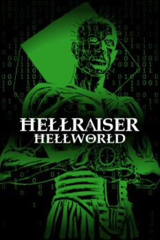

Hellraiser: Hellworld (2005)


Evil Goes Online.

País:Estados Unidos, 95 minutos.
Idiomas:Inglés
GénerosTerror, Fantasía, Ciencia Ficción
Director/es:Rick Bota
Guionistas:Carl V. Dupré
Códec de vídeo:Unknown
Número: 3556
TomatoMeter:

--

--
Clasificación IMDb:


4.2/10 (341 votos)
Certificación:
Argumento:
When five hardcore Internet gamers are invited to a special party thrown by the website Hellworld, they endure a night of unspeakable terror.
Reparto
Katheryn Winnick (Como Chelsea), Christopher Jacot (Como Jake), Henry Cavill (Como Mike), Khary Payton (Como Derrick), Anna Tolputt (Como Allison)
Medio: Archivo de video,
Localización: D:\PELICULAS\SAGAS\Hellraiser\Hellraiser 8 Hellworld (2005).mp4
Prestado: No
Rel. aspecto: Unknown